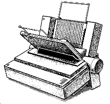
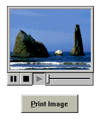
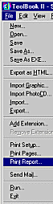
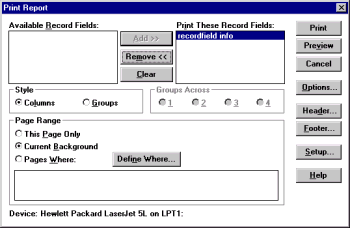
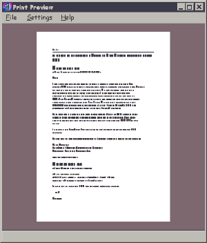

Australian Toolbook User Group



You can print almost everything in Toolbook. Each Page can be printed like a screen shot. Multiple pages (screen shots) can fit onto a page. There's even a print preview feature -
 Warning
Warning
You really should think twice before offering the preview feature to users of your finished Toolbook program - since the preview facility allows users to access critical parameters as to what Toolbook will print.
Toolbook also has a recordfield reporting facility, allowing you to produce longer text and database oriented reports.
How do I print the text of a field? Solution by Greg Breeden and Asymetrix Corporation
Sometimes it is desireable to print the text of a field or the text of several fields. ToolBook only allows either record fields or whole pages to be printed. The script below gives an example of using the shellExecute Windows API command to pass a file to another windows application to perform the printing. The following handler writes the text of fields to a file, then uses shellExecute to print that file from the program associated with the .TXT extension.
to handle buttonClick
linkdll "SHELL"
WORD shellExecute( WORD, STRING, STRING,
STRING, STRING,INT); end
-- This section creates the fileName.
fileName = name of this book
while last char of fileName "\"
clear last char of fileName
end
fileName = fileName & "tbprin.txt"
-- Create the text file to send to the printer.
createFile fileName
writeFile text of recordField "Title" \
& " " to fileName
writeFile text of recordField "Author" \
& " " to fileName
closeFile fileName
-- Runs the program associated with
-- the .TXT extension and prints the file.
get shellExecute( sysWindowHandle, print",\
fileName,"","c:\",0)
end
Printing transparent fields & rectangles Solution by Greg Johnson
Question: I have problem. Each page of my toolbook file has several transparent fields and groups of transparent rectangles . while on-screen everything looks fine, but when i print the fields and rectangles are not printed transparent.
Answer: When you select the print function look at the bottom of the dialog box. You will see a check button for "print as Bitmap" this will print the fields transparent.
Printing A Bitmap Resource Displayed In A Stage
Question: We've been trying to print a picture in a stage. But our script print all components in the page except the picture in stage. Is it possible to print the picture in the stage ?

A graphic shown in a stage is actually displayed in a separate window, so ToolBook has no control over it.
To print a page that contains a stage with a graphic, use the PRINTWND.SBK system book that is distributed with ToolBook.
To use the PRINTWND.SBK, follow these steps.
This system book can also be accessed directly by sending the PrintWindow message or calling the system books functions directly. See the book script for the PRINTWND.SBK system book for more details.
Make sure you get printwnd.sbk from the ftp site. Keep it in the directory with your runtime/author environment or in the directory with the application.
to handle buttonClick if not(sysBooks contains "printwnd.sbk") push "printwnd.sbk" onto sysbooks end send printWindow windowHandle of \ mainWindow,1,1,0,0,"5xxGUI",TRUE,TRUE,FALSE end
Experiencing different Wordwrap effects in fields on screen vs. print?
Question: The on-screen and printer wordwrap in a "wrap" field are behaving differently. My TBKII program shrinks a field so the text just fits (by decreasing the field height until textoverflow is greater than 0 then increasing it back so textoverflow is zero.) Using this algorithm, the text fits fine on-screen. However, on the printer occasionally a word that fits on-screen will wrap down to the next line, increasing the length of the text block by one line so it no longer fits in the field.
You are dealing with Font Metrics, essentially the 75 dpi screen resolution and 300-600 dpi of a printer (with Kerning controls and such) will cause the two to display differently when viewed (or printed in the case of a printer). The only way to guarantee the same look is to print the page as a Bitmap, (available in your printing options).
How to print a single field's text contents over multiple pages
Question: Any recommendations on handling complex and fancy formatted printing.
In my application the user has considerable flexibility to edit and add text, so I can't be certain the fields will print on one page
How are you printing the page? Are you using print page not as a bitmap, print page as a bitmap, or printing a report?
It sounds as if you should have a new background with one page.

When printing a report, ToolBook will take care of printing multiple pages for you. You will need to try different report settings to get the style that you want.


To access thousands more tips offline - download Toolbook Knowledge Nuggets